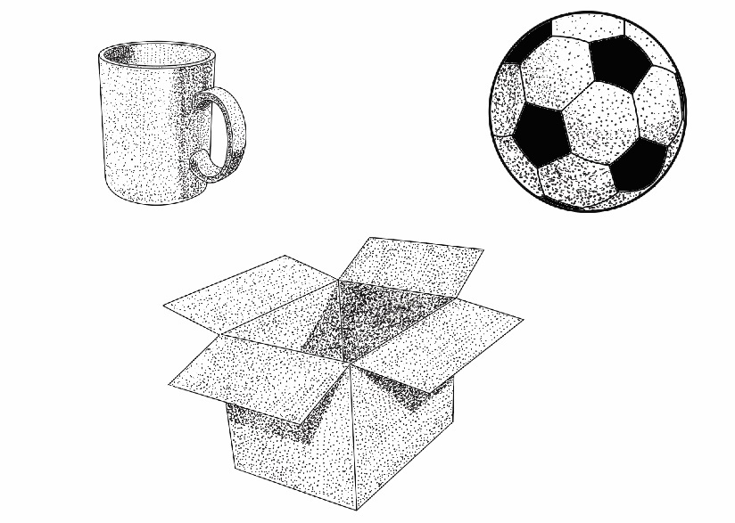
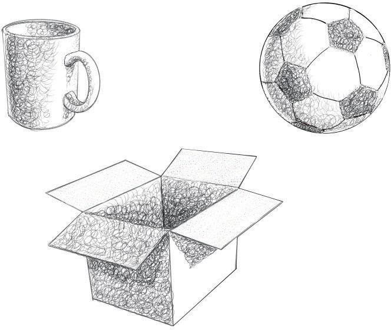

Dotting or stippling: This is a technique of shading by using dots. When dots are concentrated in the same area of a drawing, they form a darker value and evenly distributed dots form a lighter value. Figure 2.25 shows dotting shading technique.

Scribbling: This is a shading technique in a drawing which is applied by manipulating controlled and uncontrolled strokes of a drawing tool such as a pencil or charcoal to create a shade. It is a common shading technique used by artists when drawing portraits and still-life drawings. Figure 2.26 shows scribbling shading technique.
